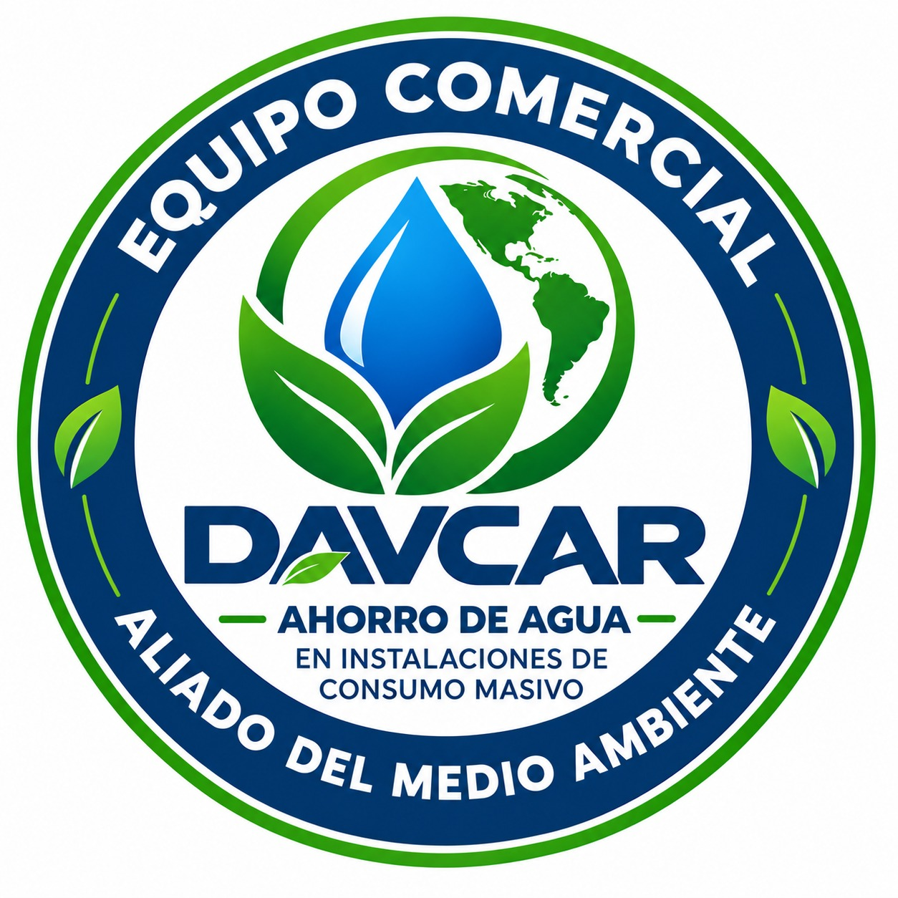
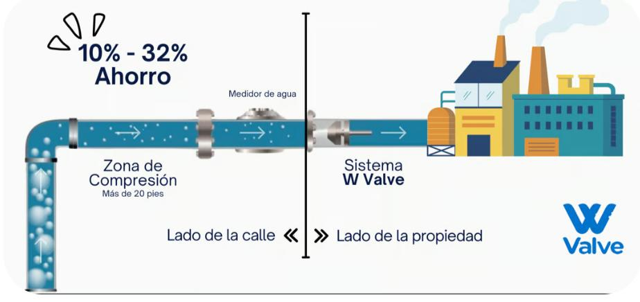

⌁
Optimización del consumo
Una solución diseñada para mejorar el uso del agua en operaciones empresariales.

DAVCAR W VALVEUna solución inteligente para optimizar el consumo de agua, reducir desperdicios y darle más valor a cada recurso de tu operación.

Una mejora en la gestión del agua puede convertirse en una ventaja para tu operación y para el entorno.
Una solución diseñada para mejorar el uso del agua en operaciones empresariales.
Conoce el desempeño de la solución en tu instalación antes de tomar una decisión.
La página actual informa una garantía mínima de 10 años para el dispositivo.
*Dato comunicado en la página actual. Los resultados pueden depender de las condiciones de cada instalación.
Validar mi caso ↗Ahorra el consumo de agua con W Valve, el dispositivo revolucionario que optimiza el servicio sin comprometer la eficiencia.
Nuestro sistema, 100% desarrollado con tecnología israelí, ya ha ayudado a numerosas empresas a reducir costos de manera eficiente.
Con tecnología de vanguardia, promovemos el uso responsable del agua en el sector industrial.
¡Únete al cambio y empieza a ahorrar hoy! ↗
En instalaciones de alto consumo, pequeñas ineficiencias pueden representar desperdicio constante. W Valve se presenta como una alternativa para ayudar a gestionar mejor el uso del agua y aprovechar cada recurso.
La propuesta es sencilla: evaluar las condiciones de tu operación, conocer el potencial de la solución y tomar decisiones con información de tu propio caso.
Consultar con un asesor ↗
El agua es un recurso esencial y su uso eficiente importa tanto para la operación como para el entorno.
W Valve busca contribuir a una gestión más eficiente del consumo en instalaciones empresariales.
Una demostración y la revisión de cada instalación permiten valorar los resultados posibles para tu negocio.

La página actual presenta experiencias de clientes del sector. Aquí puedes incorporar sus logos, testimonios o casos de éxito verificados.
Comunícate con nuestro equipo comercial para resolver tus dudas, solicitar información o coordinar una demostración.
Elige el canal que prefieras.
script.js antes de publicar.